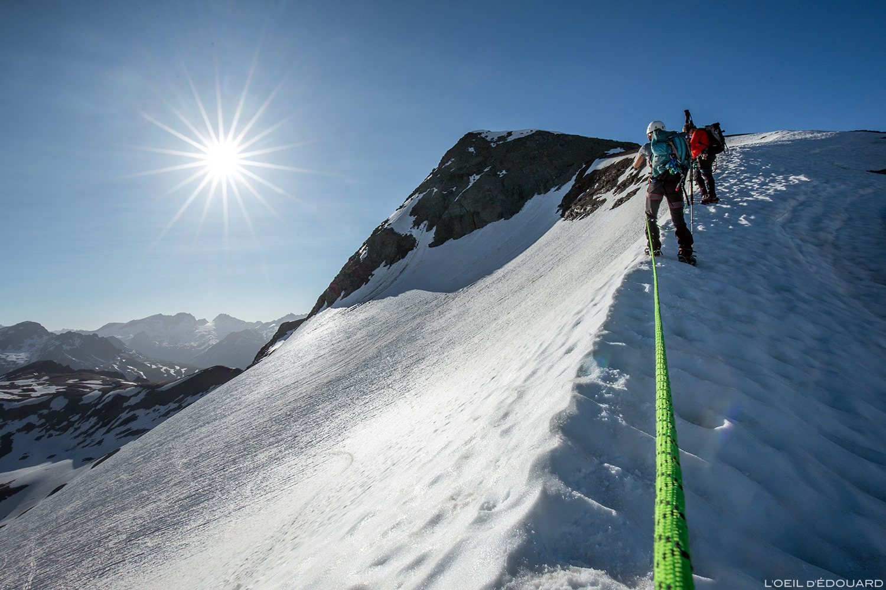

L'alpinisme est une pratique sportive et culturelle qui consiste à parcourir la montagne en vue d'atteindre un sommet ou de suivre un itinéraire en altitude. Contrairement à une randonnée classique, une course d'alpinisme peut traverser des terrains où la progression demande des connaissances spécifiques : rocher, neige, glace, glacier ou terrain mixte. La réussite d'une course ne se résume donc pas à atteindre le point culminant : elle repose aussi sur la préparation, l'analyse des conditions, l'adaptation et le retour.
Qu'est-ce que l'alpinisme ?
L'alpinisme désigne l'ensemble des pratiques qui permettent d'évoluer en terrain montagnard et de réaliser des ascensions. Les itinéraires peuvent emprunter des sentiers, des pentes raides, des arêtes rocheuses, des glaciers ou des parois. Selon la course et la saison, plusieurs types de terrain peuvent se succéder au cours d'une même journée.

Une pratique qui combine plusieurs compétences
La montagne impose de prendre en compte plusieurs paramètres en même temps. La condition physique est importante, mais elle ne suffit pas : il faut également comprendre le terrain, connaître les limites de son matériel, anticiper les changements météorologiques et prendre des décisions adaptées au groupe.
Endurance et gestion de l'effort
Une course peut représenter plusieurs heures de déplacement, un dénivelé important et parfois plusieurs journées d'activité. La gestion de l'allure, de l'alimentation, de l'hydratation et de la récupération fait partie de la préparation.
Connaissances et savoir-faire
Les compétences nécessaires dépendent du terrain. Une course rocheuse, une pente de neige et un itinéraire glaciaire ne mobilisent pas les mêmes connaissances ni le même équipement.
Compréhension du milieu
Le relief, l'altitude, l'orientation des pentes, la météo et l'état de la neige ou du rocher influencent directement les conditions de progression.
Communication et décision
En montagne, les choix se prennent en tenant compte de l'ensemble du groupe. Savoir ralentir, modifier l'objectif ou renoncer fait partie d'une pratique responsable.
Alpinisme, randonnée et escalade : quelles différences ?
Ces activités partagent un même environnement, mais leurs objectifs et leurs contraintes ne sont pas identiques. La randonnée se déroule généralement sur des itinéraires pédestres balisés ou non, sans nécessiter systématiquement de techniques d'alpinisme. L'escalade se concentre principalement sur la progression sur un support rocheux ou artificiel. L'alpinisme peut associer marche d'approche, escalade, progression sur neige ou glace et orientation en terrain montagnard.
L'alpinisme est une activité globale : il faut considérer l'itinéraire dans son ensemble, de l'approche au retour, et pas uniquement le passage le plus spectaculaire ou le sommet.
Les grandes disciplines de l'alpinisme
Le terme « alpinisme » regroupe plusieurs formes de pratique. Elles sont souvent présentées séparément pour faciliter l'apprentissage, mais une même course peut combiner plusieurs disciplines. Le choix de l'itinéraire, la saison et les conditions déterminent les terrains réellement rencontrés.
Alpinisme rocheux
Il se déroule sur des parois, des arêtes et des passages rocheux en montagne. La qualité du rocher, la continuité de l'itinéraire et l'exposition font partie des éléments à prendre en compte. Il se distingue de l'escalade en falaise par son environnement, son approche et souvent la complexité de l'itinéraire global.
Alpinisme sur neige
Il concerne les pentes, les vallons et les arêtes enneigés. La neige n'est pas un matériau constant : sa cohésion et sa stabilité évoluent avec la température, le vent, les précipitations et l'exposition. L'évaluation des conditions est donc fondamentale.
Alpinisme glaciaire et cascade de glace
L'alpinisme glaciaire emprunte des terrains couverts de glace, notamment les glaciers. La cascade de glace se pratique sur des formations de glace souvent temporaires, comme les cascades gelées. Ces environnements nécessitent des connaissances et une formation spécifiques.
Alpinisme mixte
Un itinéraire mixte alterne des sections rocheuses, neigeuses et glacées. Les transitions entre les terrains peuvent être exigeantes, car les conditions et les compétences nécessaires changent au fil de l'ascension.
Alpinisme de haute altitude
Il concerne les ascensions réalisées à altitude élevée. L'altitude peut réduire les capacités physiques et rendre l'effort plus difficile. L'acclimatation, le rythme de progression et la connaissance des effets de l'altitude prennent alors une place importante.
Ski-alpinisme
Cette pratique associe déplacement à ski en montée et en descente dans un environnement montagnard. Elle demande des compétences propres au ski hors-piste et à l'évaluation des risques liés au manteau neigeux.
Les disciplines décrivent principalement le type de pratique ou de terrain. Elles ne donnent pas, à elles seules, une indication suffisante sur le niveau de difficulté ou le degré de risque d'une course.
Les terrains rencontrés en montagne
Le relief montagnard est varié. Savoir nommer les principales formes de terrain aide à comprendre les descriptions d'itinéraires, les cartes et les topos. Cette première reconnaissance reste générale : l'aspect d'un terrain peut changer selon la saison, l'enneigement et les conditions météorologiques.
Versant
Surface inclinée d'une montagne, comprise entre une ligne de crête et une vallée ou un fond de relief. Son orientation influence notamment l'ensoleillement et l'évolution de la neige.
Arête
Ligne de relief qui sépare généralement deux versants. Une arête peut être large et facile d'accès ou, au contraire, étroite et aérienne.
Couloir
Passage encaissé entre des parois ou des reliefs. Selon les conditions, il peut canaliser la neige, les pierres ou l'eau.
Pierrier et éboulis
Zone recouverte de pierres ou de blocs, souvent issue de la fragmentation naturelle des roches. La stabilité des éléments peut être variable.
Glacier
Masse de glace issue de l'accumulation et de la transformation de la neige, qui se déforme et se déplace lentement sous son propre poids.
Col et sommet
Un col est un point bas situé entre deux sommets ou deux reliefs. Le sommet correspond à la partie la plus élevée d'une montagne ou d'une cime.
Un terrain qui évolue
Un itinéraire n'est jamais exactement identique d'une saison à l'autre. La neige peut recouvrir des passages rocheux, un glacier peut évoluer, des chutes de pierres peuvent modifier un itinéraire et les conditions météorologiques peuvent réduire la visibilité. Les descriptions d'un topo constituent donc une base de préparation, mais elles ne remplacent pas l'observation des conditions réelles ni les informations récentes.
Le vocabulaire essentiel de l'alpiniste
Les topos, les cartes et les échanges entre pratiquants utilisent un vocabulaire précis. En connaître les principaux termes facilite la lecture d'un itinéraire et permet de décrire plus clairement le terrain. Les définitions ci-dessous sont volontairement introductives : certains termes peuvent avoir des nuances selon les massifs et les usages.
Lorsque tu lis un topo, ne te limite pas à reconnaître le nom d'un sommet. Repère aussi le type de terrain, l'altitude, le dénivelé, la durée indicative, les difficultés annoncées et les informations sur le retour.
Comprendre les niveaux de difficulté
En alpinisme, la difficulté d'une course ne se résume pas à une note unique. Les systèmes de cotation cherchent à décrire différents aspects de l'itinéraire. Ils permettent de comparer des courses dans un cadre donné, mais ne prédisent pas exactement les conditions que l'on rencontrera le jour de la sortie.
Pourquoi une cotation ne suffit-elle pas ?
Une cotation est une indication utile, mais elle doit toujours être replacée dans son contexte. Deux personnes peuvent vivre différemment une même course selon leur expérience, leur forme physique, leur aisance sur le terrain et leur connaissance du massif. De plus, un itinéraire décrit dans un topo peut présenter des conditions très différentes après une période de mauvais temps ou à une autre saison.
Ne choisis jamais une course uniquement parce que sa cotation semble accessible. L'évaluation doit aussi prendre en compte les conditions récentes, l'engagement, la durée, le niveau de l'ensemble du groupe et les compétences réellement maîtrisées.
Comment débuter en alpinisme ?
La progression en alpinisme se construit étape par étape. Elle repose sur l'expérience, l'apprentissage encadré et la capacité à reconnaître ses limites. Il n'existe pas de parcours identique pour tout le monde : le rythme dépend des objectifs, des possibilités de formation et des compétences déjà acquises.
La randonnée en terrain varié permet de découvrir le relief, de gérer un effort prolongé, d'utiliser une carte et d'apprendre à observer les conditions. Elle constitue une base utile avant d'aborder des terrains plus techniques.
Se familiariser avec l'escalade, la randonnée alpine et les environnements de neige ou de glace aide à comprendre la diversité de l'alpinisme. Chaque discipline possède ses propres exigences.
Un club alpin ou un professionnel qualifié peut proposer un apprentissage progressif, adapté au niveau du participant et aux conditions. Les techniques liées à la sécurité ne s'acquièrent pas uniquement par la lecture.
Une course doit être cohérente avec les compétences du groupe, son expérience, sa condition physique et les conditions du moment. Il faut également prévoir des alternatives et accepter de modifier le projet.
Après une sortie, faire le bilan des réussites, des difficultés et des points à travailler permet de construire une progression réaliste. L'autonomie se développe avec le temps et ne se décrète pas.
Le rôle des clubs et des professionnels
Les clubs de montagne proposent souvent des activités collectives, des formations et des sorties adaptées à différents niveaux. Les guides de haute montagne sont des professionnels qualifiés pour encadrer des courses et transmettre des compétences dans des environnements variés. Le choix d'un club, d'un stage ou d'un guide dépend du projet et du niveau de départ.
Ce chapitre est un support de découverte. Les manœuvres de corde, l'assurage, les ancrages, la progression sur glacier et les techniques de secours doivent être enseignés et pratiqués avec un encadrement compétent. Une page web ne permet pas de les apprendre ni de les valider en sécurité.
Une progression solide privilégie l'apprentissage, la régularité et des objectifs adaptés. Savoir renoncer ou demander l'aide d'un professionnel est une compétence à part entière.
Sources et ressources pour approfondir
Les notions présentées dans ce chapitre constituent une introduction générale. Pour approfondir, privilégie les documents d'organismes spécialisés, les formations reconnues et les informations actualisées. Les descriptions d'itinéraires doivent être recoupées avec les conditions récentes.
- Fédération française des clubs alpins et de montagne (FFCAM) — clubs, activités, formations et pratique de la montagne.
- École nationale des sports de montagne (ENSM) — formation aux métiers de l'encadrement en montagne.
- Union internationale des associations d'alpinisme (UIAA) — informations et recommandations internationales liées à l'alpinisme et à la sécurité.
- Camptocamp — base collaborative de descriptions d'itinéraires, à confronter aux informations officielles et aux conditions actuelles.
Crédits photographiques : pour chaque image publiée, indique au minimum son auteur, sa source et sa licence ou l'autorisation d'utilisation. Une image trouvée avec un moteur de recherche n'est pas automatiquement libre de droits.
Dernière révision : novembre 2026. Les informations générales ne remplacent ni une formation pratique ni les consignes des professionnels qui encadrent une sortie.